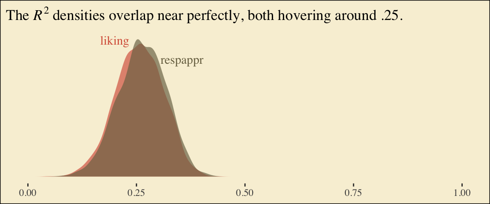
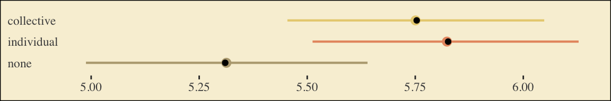

6Mediation Analysis with a Multicategorical Antecedent
“Historically, investigators interested in doing a mediation analysis with a multicategorical antecedents \(X\) have resorted to some less optimal strategies than the one [Hayes] discuss[ed] in this chapter” (Hayes, 2018, p. 188). Happily, the approach outlined in this chapter avoids such gaffs. Hayes’s procedure “does not require discarding any data; the entire sample is analyzed simultaneously. Furthermore, the multicategorical nature of \(X\) is respected and retained (p. 189).”
6.1 Relative total, direct, and indirect effects
In review of regression analysis in Chapter 2, we saw that a multicategorical antecedent variable with \(g\) categories can be used as an antecedent variable in a regression model if it is represented by \(g - 1\) variables using some kind of group coding system (see section 2.7). [Hayes] described indicator or dummy coding as one such system, where groups are represented with \(g - 1\) variables set to either zero or one (see Table 2.1). With indicator coding, one of the \(g\) groups is chosen as the reference group. Cases in the reference group receive a zero on all \(g - 1\) variables coding \(X\). Each of the remaining \(g - 1\) groups gets its own indicator variable that is set to 1 for cases in that group, with all other cases set to zero. Using such a system, which of the \(g\) groups a case is in is represented by its pattern of zeros and ones on the \(g - 1\) indicator variables. These \(g - 1\) indicator variables are then used as antecedent variables in a regression model as a stand-in for \(X\). (pp. 189–190, emphasis in the original)
6.1.1 Relative indirect effects
When our \(X\) is multicategorical, we end up with \(g - 1\)\(a\) coefficients. Presuming the \(M\) variable is continuous or binary, this will yield \(g - 1\)relative indirect effects, \(a_j b\).
6.1.2 Relative direct effects
Similar to above, when our \(X\) is multicategorical, we end up with \(g - 1\)\(c'\) coefficients, each of which is a relative direct effects.
6.1.3 Relative total effects
With the two prior subsections in mind, when our \(X\) is multicategorical, we end up with \(g - 1\)\(c\) coefficients, each of which is a relative total effect. These follow the form
\[c_j = c_j' + a_j b,\]
where \(j\) indexes a given group.
6.2 An example: Sex discrimination in the workplace
Here we load a couple necessary packages, load the data, and take a glimpse().
It looks like Hayes has a typo in the \(\textit{SD}\) for liking when protest == 0. It seems he accidentally entered the value for when protest == 1 in that slot.
You’ll have to wait a minute to see where the adjusted \(Y\) values came from.
With a little if_else(), computing the dummies d1 and d2 is easy enough.
We’re almost ready to fit the model. Let’s load brms.
library(brms)
This is the first time we’ve had a simple univariate regression model in a while–no special mvbind() syntax or multiple bf() formulas, just straight up brms::brm().
Here’s its shape. For the plots in this chapter, we’ll take a few formatting cues from Edward Tufte (2001), courtesy of the ggthemes package. The theme_tufte() function will change the default font and remove some chart junk. We will take our color palette from Pokemon via the palettetown package(Lucas, 2016).
To use the model-implied equations to compute the means for each group on the criterion, we’ll extract the posterior draws.
draws <-as_draws_df(model6.1)draws %>%mutate(Y_np = b_Intercept + b_d1 *0+ b_d2 *0,Y_ip = b_Intercept + b_d1 *1+ b_d2 *0,Y_cp = b_Intercept + b_d1 *0+ b_d2 *1) %>%pivot_longer(contains("Y_")) %>%# this line will order our output the same way Hayes did in the text (p. 197)mutate(name =factor(name, levels =c("Y_np", "Y_ip", "Y_cp"))) %>%group_by(name) %>%summarize(mean =mean(value),sd =sd(value))
# A tibble: 3 × 3
name mean sd
<fct> <dbl> <dbl>
1 Y_np 5.32 0.171
2 Y_ip 5.83 0.162
3 Y_cp 5.75 0.155
What Hayes called the “relative total effects” \(c_1\) and \(c_2\) are the d1 and d2 lines in our fixef() output, above.
There’s a third way to fit multivariate models in brms. It uses either the mvbrmsformula() function, or its abbreviated version, mvbf(). With these, we first define our submodels in br() statements like before. We then combine them within mvbf(), separated with a comma. If we’d like to avoid estimating a residual correlation, which we do in this project–, we then set rescore = FALSE. Here’s how it looks like for our second model.
Family: MV(gaussian, gaussian)
Links: mu = identity
mu = identity
Formula: respappr ~ 1 + d1 + d2
liking ~ 1 + d1 + d2 + respappr
Data: protest (Number of observations: 129)
Draws: 4 chains, each with iter = 2000; warmup = 1000; thin = 1;
total post-warmup draws = 4000
Regression Coefficients:
Estimate Est.Error l-95% CI u-95% CI Rhat Bulk_ESS Tail_ESS
respappr_Intercept 3.88 0.19 3.51 4.24 1.00 5285 2838
liking_Intercept 3.72 0.31 3.13 4.32 1.00 5877 3393
respappr_d1 1.26 0.26 0.75 1.76 1.00 5756 3184
respappr_d2 1.61 0.25 1.12 2.10 1.00 5539 3229
liking_d1 -0.00 0.22 -0.45 0.43 1.00 4017 3171
liking_d2 -0.22 0.24 -0.68 0.24 1.00 4025 3392
liking_respappr 0.41 0.07 0.27 0.55 1.00 4573 3234
Further Distributional Parameters:
Estimate Est.Error l-95% CI u-95% CI Rhat Bulk_ESS Tail_ESS
sigma_respappr 1.18 0.08 1.04 1.34 1.00 6940 2909
sigma_liking 0.93 0.06 0.82 1.05 1.00 7109 2888
Draws were sampled using sampling(NUTS). For each parameter, Bulk_ESS
and Tail_ESS are effective sample size measures, and Rhat is the potential
scale reduction factor on split chains (at convergence, Rhat = 1).
Behold the Bayesian \(R^2\) posteriors.
bayes_R2(model6.2, summary = F) %>%data.frame() %>%pivot_longer(everything()) %>%ggplot(aes(x = value, fill = name)) +geom_density(linewidth =0, alpha =2/3) +annotate("text", x =0.2, y =7, label ="liking", color =pokepal(pokemon ="plusle")[2], family ="Times") +annotate("text", x =0.355, y =6, label ="respappr", color =pokepal(pokemon ="plusle")[6], family ="Times") +scale_fill_manual(values =pokepal(pokemon ="plusle")[c(2, 6)]) +scale_x_continuous(NULL, limits =c(0:1)) +scale_y_continuous(NULL, breaks =NULL) +labs(title =expression(The~italic(R)^2*" densities overlap near perfectly, both hovering around .25.")) +theme_tufte() +theme(legend.position ="none",plot.background =element_rect(fill =pokepal(pokemon ="plusle")[8]))

To get the model summaries as presented in the second two columns in Table 6.2, we use as_draws_df(), rename a bit, and summarize. Like in the last chapter, here we’ll do so with a little help from tidybayes.
# A tibble: 7 × 7
name value .lower .upper .width .point .interval
<chr> <dbl> <dbl> <dbl> <dbl> <chr> <chr>
1 a1 1.26 0.749 1.76 0.95 mean qi
2 a2 1.62 1.12 2.10 0.95 mean qi
3 b 0.411 0.273 0.551 0.95 mean qi
4 c1_prime -0.004 -0.45 0.43 0.95 mean qi
5 c2_prime -0.219 -0.675 0.24 0.95 mean qi
6 i_m 3.88 3.51 4.24 0.95 mean qi
7 i_y 3.72 3.13 4.32 0.95 mean qi
Working with the \(\overline M_{ij}\) formulas in page 199 is quite similar to what we did above.
draws %>%mutate(M_np = b_respappr_Intercept + b_respappr_d1 *0+ b_respappr_d2 *0,M_ip = b_respappr_Intercept + b_respappr_d1 *1+ b_respappr_d2 *0,M_cp = b_respappr_Intercept + b_respappr_d1 *0+ b_respappr_d2 *1) %>%pivot_longer(starts_with("M_")) %>%# this line will order our output the same way Hayes did in the text (p. 199)mutate(name =factor(name, levels =c("M_np", "M_ip", "M_cp"))) %>%group_by(name) %>%summarize(mean =mean(value),sd =sd(value))
# A tibble: 3 × 3
name mean sd
<fct> <dbl> <dbl>
1 M_np 3.88 0.186
2 M_ip 5.15 0.180
3 M_cp 5.50 0.174
The \(\overline Y^*_{ij}\) formulas are more of the same.
# A tibble: 3 × 3
name mean sd
<fct> <dbl> <dbl>
1 Y_np 5.71 0.166
2 Y_ip 5.71 0.142
3 Y_cp 5.50 0.144
Note, these are where the adjusted \(Y\) values came from in Table 6.1.
This is as fine a spot as any to introduce coefficient plots. The brms, tidybayes, and bayesplot packages all offer convenience functions for coefficient plots. Before we get all lazy using convenience functions, it’s good to know how to make coefficient plots by hand. Here’s ours for those last three \(\overline Y^*_{ij}\)-values.
The points are the posterior medians, the thick inner lines the 50% intervals, and the thinner outer lines the 95% intervals. For kicks, we distinguished the three values by color.
If we want to examine \(R^2\) change for dropping the dummy variables, we’ll first fit a model that omits them.
It’s important to note that these will not correspond to the “TOTAL EFFECT MODEL” section of the PROCESS output of Figure 6.3. Hayes’s PROCESS has the mcx=3 command which tells the program to reparametrize the orthogonal contrasts. brms doesn’t have such a command.
For now, we’ll have to jump to Equation 6.8 towards the bottom of page 207. Those parameters are evident in our output. For good measure, here we’ll practice with posterior_summary().
# A tibble: 3 × 3
name mean sd
<fct> <dbl> <dbl>
1 Y_np 5.71 0.157
2 Y_ip 5.71 0.145
3 Y_cp 5.49 0.147
And with these in hand, we can compute \(c'_1\) and \(c'_2\).
draws <- draws %>%mutate(c1_prime = (Y_ip + Y_cp) /2- Y_np,c2_prime = Y_cp - Y_ip)draws %>%pivot_longer(c1_prime:c2_prime) %>%group_by(name) %>%summarize(mean =mean(value),sd =sd(value))
# A tibble: 2 × 3
name mean sd
<chr> <dbl> <dbl>
1 c1_prime -0.109 0.203
2 c2_prime -0.219 0.203
It appears Hayes has a typo in the formula for \(c'_2\) on page 211. The value he has down for \(\overline Y^*_{IP}\), 5.145, is incorrect. It’s not the one he displayed at the bottom of the previous page and it also contradicts the analyses herein. So it goes… These things happen.
We haven’t spelled it out, but the \(b\) parameter is currently labeled b_liking_respappr in our draws object. Here we’ll make a b column to make things easier. While we’re at it, we’ll compute the indirect effects, too.
# A tibble: 2 × 7
name value .lower .upper .width .point .interval
<chr> <dbl> <dbl> <dbl> <dbl> <chr> <chr>
1 a1b 0.59 0.339 0.893 0.95 mean qi
2 a2b 0.142 -0.05 0.359 0.95 mean qi
Now we can compute and summarize() our \(c_1\) and \(c_2\).
draws <- draws %>%mutate(c1 = c1_prime + a1b,c2 = c2_prime + a2b)draws %>%pivot_longer(c1:c2) %>%group_by(name) %>%summarize(mean =mean(value),sd =sd(value))
# A tibble: 2 × 3
name mean sd
<chr> <dbl> <dbl>
1 c1 0.481 0.197
2 c2 -0.0765 0.224
6.4 Some miscellaneous issues [unrelated to those Hayes covered in the text]
Do you recall how way back in Chapter 2 we covered an alternative way to fit models with multicategorical grouping variables? Well, we did. The basic strategy is to save our grouping variable as a factor and then enter it into the model with the special 0 + syntax, which removes the typical intercept. Since this chapter is all about multicategorical variables, it might make sense to explore what happens when we use this approach. For our first step, well prepare the data.
Before we fit a full mediation model, we should warm up. Here we fit a univariable model for liking. This is an alternative to what we did way back with model6.1.
Family: gaussian
Links: mu = identity
Formula: liking ~ 0 + group
Data: protest (Number of observations: 129)
Draws: 4 chains, each with iter = 2000; warmup = 1000; thin = 1;
total post-warmup draws = 4000
Regression Coefficients:
Estimate Est.Error l-95% CI u-95% CI Rhat Bulk_ESS Tail_ESS
groupnone 5.31 0.17 4.99 5.64 1.00 4556 2860
groupindividual 5.82 0.16 5.51 6.13 1.00 4428 2820
groupcollective 5.75 0.15 5.45 6.05 1.00 3912 2758
Further Distributional Parameters:
Estimate Est.Error l-95% CI u-95% CI Rhat Bulk_ESS Tail_ESS
sigma 1.04 0.07 0.92 1.18 1.00 4089 2910
Draws were sampled using sampling(NUTS). For each parameter, Bulk_ESS
and Tail_ESS are effective sample size measures, and Rhat is the potential
scale reduction factor on split chains (at convergence, Rhat = 1).
There’s no conventional intercept parameter. Rather, each of the each of the levels of group get its own conditional intercept. To get a sense of what this model is, let’s practice our coefficient plotting skills. This time we’ll compute the necessary values before plugging them into ggplot2.
# compute the means for `liking` by `group`group_means <- protest %>%group_by(group) %>%summarize(mu_liking =mean(liking))# pull the posterior summaries and wranglefixef(model6.5) %>%data.frame() %>%rownames_to_column("parameter") %>%mutate(group =str_remove(parameter, "group")) %>%# plot!ggplot(aes(y = group)) +# this is the main function for our coefficient plotsgeom_pointrange(aes(x = Estimate, xmin = Q2.5, xmax = Q97.5, color = group),linewidth =3/4) +geom_point(data = group_means,aes(x = mu_liking)) +scale_color_manual(values =pokepal(pokemon ="plusle")[c(3, 7, 9)]) +labs(x =NULL, y =NULL) +theme_tufte() +theme(axis.text.y =element_text(hjust =0),axis.ticks.y =element_blank(),legend.position ="none",plot.background =element_rect(fill =pokepal(pokemon ="plusle")[8]))

The results from the model are in colored point ranges. The black dots in the foreground are the empirical means. It looks like our model did a good job estimating the group means for liking.
Let’s see how this coding approach works when you fit a full mediation model. First, define the sub-models with two bf() lines.
m_model <-bf(respappr ~0+ group)y_model <-bf(liking ~0+ group + respappr)
Family: MV(gaussian, gaussian)
Links: mu = identity
mu = identity
Formula: respappr ~ 0 + group
liking ~ 0 + group + respappr
Data: protest (Number of observations: 129)
Draws: 4 chains, each with iter = 2000; warmup = 1000; thin = 1;
total post-warmup draws = 4000
Regression Coefficients:
Estimate Est.Error l-95% CI u-95% CI Rhat Bulk_ESS Tail_ESS
respappr_groupnone 3.88 0.18 3.53 4.24 1.00 3568 2459
respappr_groupindividual 5.15 0.18 4.80 5.51 1.00 4109 3193
respappr_groupcollective 5.50 0.17 5.17 5.84 1.00 4065 2561
liking_groupnone 3.71 0.31 3.08 4.32 1.00 1140 1775
liking_groupindividual 3.71 0.40 2.92 4.48 1.00 1070 1861
liking_groupcollective 3.49 0.42 2.67 4.30 1.00 1171 1834
liking_respappr 0.41 0.07 0.27 0.56 1.00 1100 1524
Further Distributional Parameters:
Estimate Est.Error l-95% CI u-95% CI Rhat Bulk_ESS Tail_ESS
sigma_respappr 1.18 0.08 1.04 1.33 1.00 3368 2596
sigma_liking 0.93 0.06 0.82 1.05 1.00 4006 2611
Draws were sampled using sampling(NUTS). For each parameter, Bulk_ESS
and Tail_ESS are effective sample size measures, and Rhat is the potential
scale reduction factor on split chains (at convergence, Rhat = 1).
If you flip back to page 199, you’ll notice the posterior mean in the first three rows (i.e., respappr_groupnone through respappr_groupcollective) correspond to the estimates for \(\overline M_{NP}\), \(\overline M_{IP}\), and \(\overline M_{CP}\), respectively.
# A tibble: 3 × 7
name value .lower .upper .width .point .interval
<chr> <dbl> <dbl> <dbl> <dbl> <chr> <chr>
1 a1b 1.60 1.05 2.19 0.95 mean qi
2 a2b 2.12 1.4 2.91 0.95 mean qi
3 a3b 2.26 1.49 3.07 0.95 mean qi
With this parameterization, it’s a little difficult to interpret the \(a_j b\) estimates. None of them are in comparison to anything. However, this approach is quite useful once you compute their various difference scores.
# A tibble: 3 × 7
name value .lower .upper .width .point .interval
<chr> <dbl> <dbl> <dbl> <dbl> <chr> <chr>
1 diff_collective_minus_individual 0.144 -0.062 0.374 0.95 mean qi
2 diff_collective_minus_none 0.665 0.381 0.996 0.95 mean qi
3 diff_individual_minus_none 0.521 0.273 0.827 0.95 mean qi
If you look back to our results from model6.2, you’ll see that diff_individual_minus_none and diff_collective_minus_none correspond to a1b and a2b, respectively. But with our model6.6 approach, we get the additional information of what kind of indirect effect we might have yielded had we used a different coding scheme for our original set of dummy variables. That is, we get diff_collective_minus_individual.
Comments